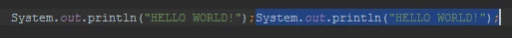
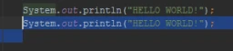
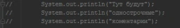
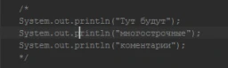
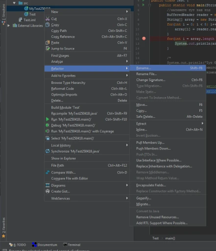
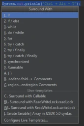
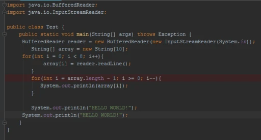
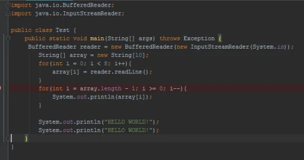
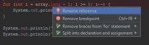

У всех была ситуация, когда: "мне надо скопировать этот кусок, но в буфере тоже нужная вещь"
В этой ситуации приходит на помощь:
Ctrl + D
Это команда копирования строки(куска строки, куска кода класса, да и всего чего хочешь, что можно выделить в файле), при этом она копирует код ту же строку, где заканчивается "курсор выделения". Поэтому, если вы хотите скопировать на следующую строку, захватывайте и её =)


Когда не очень хочется удалять какой-либо кусок кода, но расставлять комментарий на многих строчках - не слишком удобно. Сущесвуют клавиши и на это случай жизни:
Ctrl + /
Ctrl + Shift + /
В первом варианте, вы закомментируете кусок кода - однострочным комментарием:

Во втором варианте, коментарий будет много строчный:

(Спойлер: снять коментарий с помощью этих комбинаций тоже можно)
А может случится так, что ты описался в названии класса, а потом думаешь, удалять его или можно его как-то переименовать. Его можно переименовать! Для этого можно жмакнуть правой кнопкой мыши по названию класса в проекте:

Либо по имени в самом классе(выбираем такие же положения меню). Но! Как вы увидели на скриншотах - там есть небольшая подсказка на сочетание клавиш:
Shift + F6
Есть так же функция удаления строки, без её выделения. Главное чтобы там был курсор, остальное детали =)
Ctrl + Y
Если у тебя есть код, но тебе его надо обернуть каким-либо блоком(if / for / try и всякое такое), тебя спасут:
Ctrl + Alt + T

Полезное сочетание, для наведения порядка в коде:
Ctr + Alt + I
Оно ровняет отступы в коде(если выделен кусок кода, то в данном куске, если нет - на той строке, где стоит курсор). Пример до:

После:

(Внимание спойлер!) Но есть ещё более мощная штука! которая не только меняет строки, но так же и приводит твой код в соответствие code style:
Ctr + Alt + L
Вот она точно научит красиво программировать!
Ещё IDEA понимает некоторые сокращения, которые в дальнейшем она преобразует до полных команд. Вот некоторые из них, которое могут пригодиться:
psvm + tab -> public static void main
sout + tab -> System.out.println()
serr + tab -> System.err.println()
I + Enter -> for(Object object : ){} + ESC
iter + Enter -> for(Object o: ){} + ESC
fori + tab -> for (int i = 0; i < ; i++){}
Все сокращения можно посмореть при помощи: Сtrl + J
Ах да, чуть не забыла про самую полезную штуку в IDEA! Если вдруг случится ляп! Может быть он не большим, но противным и ... Короче программа не запуститься =)
Наверняка у вас были случаи, когда при написании в коде допускались какие-либо ошибки и при этом место ошибки IDEA подчеркивала красным. А ты такой сидишь и думаешь: "Экая чертяка! Опять ей что-то не нравиться! Да тут же все нормально!" Чтобы понять что её не нравится нужно поставить курсор в то место, где она подсвечивает и нажать комбинацию:
Alt + Enter
После этого она предложит свое решение, можно выбрать из этого списка(очень умные вещи предлагает), в редких случаях придется думать самому.
